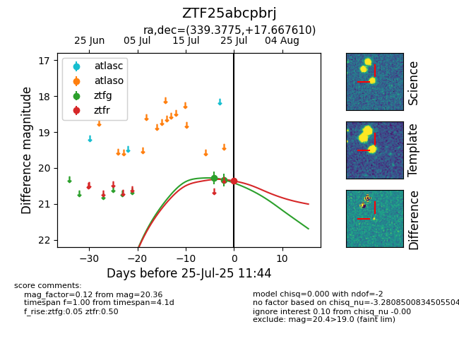

Target ZTF25abcpbrj at 2025-07-25 11:44, see:
FINK: fink-portal.org/ZTF25abcpbrj
Lasair: lasair-ztf.lsst.ac.uk/objects/ZTF25abcpbrj
ALeRCE: alerce.online/object/ZTF25abcpbrj
alt names
ZTF25abcpbrj (ztf,fink)
coordinates:
equatorial (ra, dec) = (339.3775,+17.66761)
galactic (l, b) = (83.2022,-34.67369)
photometry
last ztfg=20.33, ztfr=20.36
2 ztfg, 1 ztfr detections
